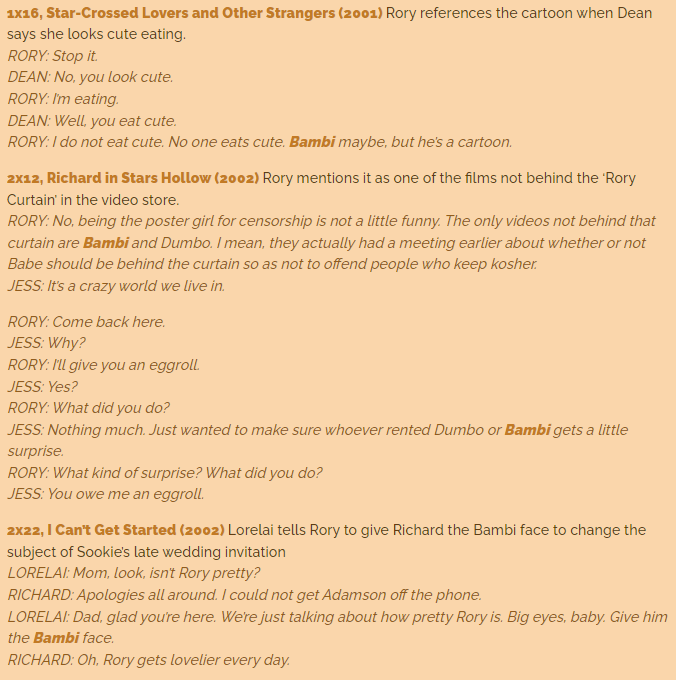

Het kleine hertje Bambi maakt de eerste jaren van zijn leven kennis met alles wat los en vast zit in het grote woud waarin hij samen met vele andere dieren woont. Hij ontmoet het konijn Stampertje, met wie hij bevriend raakt en vele avonturen beleeft. Bambi maakt ook kennis met het stinkdier Bloempje.
Nadat het gedeelte in het woud is ontdekt, mag Bambi met zijn moeder naar de grote weide. Zijn moeder waarschuwt hem wel voor de mensen. Alles blijkt veilig te zijn en Bambi ontmoet Feline, een jong meisjeshert. Even later komt er een groep herten aangerend. Ze stoppen allemaal voor de "Grote Prins", Bambi's vader en tevens het oudste en slimste hert van het woud. Dan blijken er toch mensen in het bos te zijn en de herten vluchten naar een veiligere plek.
Als de winter is aangebroken, beleeft Bambi avonturen op het ijs met Stampertje en leert hij wat sneeuw is. Intussen raakt het eten in het bos op en er is bijna niets meer te vinden. Op een dag ziet Bambi's moeder een beetje gras in een open veld. Maar de jagers zijn weer in het bos en Bambi en zijn moeder vluchten. Bambi mag in geen geval omkijken en moet zo snel mogelijk naar hun schuilplaats. Dan klinkt er een schot. Niet veel later is Bambi in veiligheid, maar zijn moeder ziet hij nergens meer. Als Bambi haar gaat zoeken staat hij ineens oog in oog met zijn vader, die hem verteld dat Bambi's moeder door de jagers is vermoord en meegenomen.
De Grote Prins neemt Bambi nu onder zijn hoede en Bambi groeit op tot een volwassen hert. Ook Stampertje en Bloempje zijn volwassener geworden. De uil in het bos maakt hen er attent op dat het lente is, de tijd van de zogenoemde "lentekolder": een jongen ontmoet een meisje en wordt zo verliefd op haar dat hij zijn hoofd niet meer van haar af kan houden. Alle drie menen ze dat hen dat niet overkomt, en ze lopen weg. Uiteindelijk blijkt Bloempje een vriendinnetje tegen te komen. Even later haakt ook Stampertje af als hij een lief vriendinnetje tegenkomt. Bambi loopt verder en komt Feline tegen. Eerst moet hij niets van haar hebben, maar later ziet hij wel iets in haar. Dan worden ze bedreigd door een ander hert. Bambi probeert Feline te beschermen door het andere hert te verjagen, dat na een lang gevecht besluit te vluchten.
Opnieuw zijn de jagers in het bos, maar nu zijn ze met meer. De dieren vluchten verder het bos in, maar velen ontkomen niet aan de schoten. Als Feline op zoek gaat naar Bambi, stuit ze op een troep jachthonden. Feline vlucht en weet zich tijdelijk te verschansen op een richel. Bambi komt op tijd om Feline te redden en gaat in gevecht met de honden. Hij weet de honden te verslaan en vlucht, maar wordt door een jager in zijn been geschoten. De gewonde Bambi moet van de Grote Prins opstaan. Een nagloeiend kampvuur in het kamp van de jagers en de harde wind zorgen ervoor dat het bos binnen de kortste keren in lichterlaaie staat. Samen met de Grote Prins vlucht Bambi naar een veiliger plek.
De volgende lente bevalt Feline van een tweeling. Het hele bos is komen kijken en geniet van de twee kleine hertjes. Vanaf een hoge berg staat Bambi samen met zijn vader trots toe te kijken.
